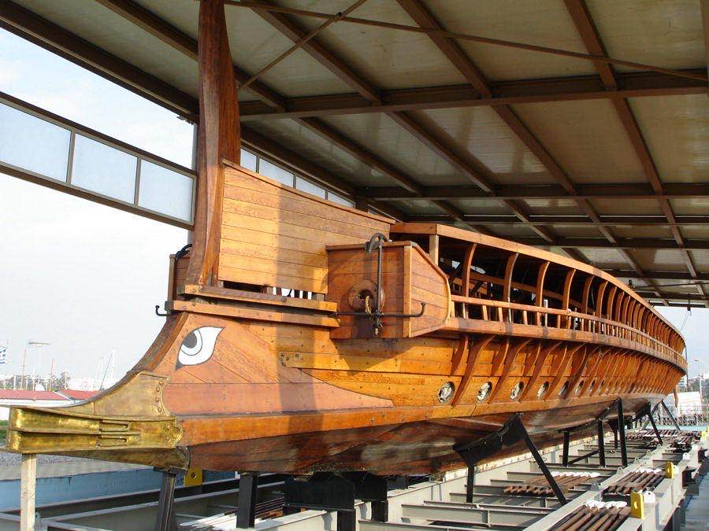

思考実験・哲学
アテネの港に保存された英雄の船。朽ちた板を1枚ずつ交換していく。すべての板が新しくなったとき、それはまだテセウスの船なのか。さらに——取り外した古い板で、もう1隻の船を組み立てたら?
プルタルコスが『対比列伝（英雄伝）』の「テセウス伝」で記述。
同時代、ローマではコロッセオの建設が始まった。4年後の西暦79年にはヴェスヴィオ火山が噴火し、ポンペイが埋没する。
2000年近く前の問いが、いまだに決着していない。それどころか、21世紀にドラマの中でバイラルになった。
お気に入りのスニーカーの底がすり減って、靴底を張り替えた。次にアッパーが破れたから、そこも修理した。紐も、インソールも新品になった。箱から出したばかりの頃の素材は、もうひとつも残っていない。
でも、それを「新しい靴」とは呼ばない。名前を書いていたわけでもないのに、なぜかそれは「自分の靴」であり続けている。何を根拠にそう思うのか、考えたことはあるだろうか。
この「なぜそう思えるのか」を、哲学者たちは2000年近く議論し続けている。
部品を入れ替えていったとき、「同じもの」はどこにあるのか。自分の直感がどこで揺らぐかを確かめるための記事。
ギリシア神話の英雄テセウスは、クレタ島の迷宮で怪物ミノタウロスミノタウロス（Minotaur）
クレタ王ミノスの宮殿の迷宮に閉じ込められていた、牛の頭を持つ怪物。テセウスはこの怪物を倒し、アテネの若者たちを救った。を倒し、アテネに凱旋した。その帰還に使われた30本の櫂櫂（かい／oar）
船を漕ぐための長い棒状の道具。古代ギリシアの軍船では、両側に並んだ漕ぎ手が櫂で水を掻いて進んだ。を持つ船は、英雄の功績を記念するために港に保存された。アテネの市民は毎年この船でデロス島デロス島（Delos）
エーゲ海に浮かぶ小島。アポロン神の生誕地とされ、古代ギリシアの重要な聖地だった。への巡礼を行い、船を現役で維持し続けた。
だが木は朽ちる。年月が経つにつれ、腐った板は1枚ずつ新しい木材に取り替えられた。何百年もかけて、船のすべての部品が入れ替わった。
1世紀のギリシアの著述家プルタルコスプルタルコス（Plutarch, 46頃–120頃）
古代ギリシアの著述家・伝記作家。代表作『対比列伝（英雄伝）』で、ギリシアとローマの英雄を対にして伝記を書いた。は、この状況を『対比列伝』の「テセウス伝」に記録した。板がすべて交換された船は、まだテセウスの船と言えるのか。古代の哲学者たちの間でも意見は割れていた、と彼は書いている。
"The ship wherein Theseus and the youth of Athens returned from Crete had thirty oars, and was preserved by the Athenians down even to the time of Demetrius Phalereus, for they took away the old planks as they decayed, putting in new and stronger timber in their places, insomuch that this ship became a standing example among the philosophers, for the logical question of things that grow; one side holding that the ship remained the same, and the other contending that it was not the same."
「テセウスとアテネの若者たちがクレタから帰還した船は30本の櫂を持ち、デメトリオス・パレレウスの時代まで保存されていた。朽ちた古い板を取り除き、新しい丈夫な木材に替えていったため、この船は哲学者たちの間で成長するものの論理的問題の定番の例となった。一方はその船が同じであると主張し、他方は同じではないと主張した。」
— プルタルコス『対比列伝』「テセウス伝」第23章（西暦75年頃）

アテナイの三段櫂船「オリンピアス」。1987年、古代設計図から復元され、ヘレニック海軍に就役した、現存する唯一のトリレメ。古代の船を現代に組み直すこの船自体が、テセウスの問いの延長線にある。（撮影: George E. Koronaios, CC BY-SA 4.0）
問いは1600年も保留された。17世紀、イギリスの哲学者トマス・ホッブズトマス・ホッブズ（Thomas Hobbes, 1588–1679）
イギリスの哲学者。代表作『リヴァイアサン』で社会契約論を展開した。『物体論（De Corpore）』で「テセウスの船」に新たな変奏を加えた。が、この思考実験に決定的な一撃を加えた。
ホッブズはこう問うた。もし船の管理人が、取り外した古い板をすべて保管していたらどうか。そしてその古い板を使って、元の設計図通りにもう1隻の船を組み立てたら——いったいどちらがテセウスの船なのか。
これが厄介な理由は、どちらの船にも「テセウスの船」を名乗る根拠があることだ。船Aは形と歴史の連続性を持っている。板を1枚交換したくらいで船が「別物」にはならないから、その延長で100枚交換しても同じ船であるはずだ。一方の船Bは、テセウスが実際に触れた木材でできている。物質的な意味では、こちらのほうが「元の船」に近い。
✗ よくある誤解
テセウスの船は「正解のある論理パズル」で、正しい答えを出せる
✓ 実際は
2000年間、哲学者たちが複数の立場から議論し続けている未解決の問題。答えはひとつではない
✗ よくある誤解
人間の細胞は7年ですべて入れ替わるので、7年前の自分と今の自分は「別人」
✓ 実際は
細胞の寿命は部位ごとに大きく異なる。脳神経細胞の多くは生まれてから死ぬまで一度も交換されない
✗ よくある誤解
「物質が変われば別のもの」か「連続性があれば同じもの」の二択
✓ 実際は
アリストテレスの四原因説、ジョン・ロックの記憶理論、現代の四次元主義など、「同一性とは何か」には複数の理論がある
| 立場 | 同一性の根拠 | テセウスの船では |
|---|---|---|
| 素材主義 | 物質が同じなら同じもの | 船B（古い板で再建）が本物 |
| 形式主義 | 形や構造が維持されていれば同じ | 船A（修繕された船）が本物 |
| 連続性理論 | 途切れない変化の連鎖が同一性 | 船Aが本物（段階的な変化は同一性を壊さない） |
| 四次元主義 | 時間を含めた4次元で「同じ」を定義 | 船Aも船Bも、テセウスの船の異なる「時間的断片」 |
テセウスの船が興味深いのは、理屈ではなく直感の問題だからだ。「板を1枚交換しただけなら、まだ同じ船だろう」——これに異論のある人は少ないはずだ。では2枚なら? 15枚なら? 29枚なら? 30枚すべてなら?
どこかに境界線があるはずだと思う。でも、それがどこにあるかは言えない。哲学者たちはこれを曖昧性の問題曖昧性の問題（Problem of Vagueness）
ある性質が成立しなくなる正確な境界を特定できない状況のこと。「何本の砂粒で砂山になるか」（ソリテスのパラドックス）と同じ構造を持つ。と呼ぶ。答えを出すことが難しいのではなく、そもそも「正確な境界」というものが存在しないのかもしれない、という問題だ。
言葉で考えるより、自分の直感で試してみたほうが速い。
スライダーを動かして、船の板を交換していこう。各段階で「これはまだ同じ船か?」に答えてみてほしい。
交換: 0 / 30 枚
すべて元の板。テセウスが実際に乗った船そのもの。
この船は、まだ「テセウスの船」か?
おそらく、0枚のときは迷わなかったはずだ。30枚のときも、案外はっきり答えられたかもしれない。問題は、その間のどこかだ。15枚あたりで手が止まらなかっただろうか。
これがテセウスの船の核心だ。1枚の交換は同一性を壊さない。だが30枚の交換も、1枚の交換を30回繰り返しただけだ。どこで「同じ」が「別」に変わるのか、誰にも指さすことができない。
「同じ」と「違う」の間に境界線があるはずだと思う。だがその線を引こうとすると、指の間をすり抜ける。
この問題が2000年も解けないのは、「同一性」の定義が1つではないからだ。何をもって「同じ」と呼ぶかについて、少なくとも4つの異なる考え方がある。古代ギリシアのアリストテレスアリストテレス（Aristotle, 前384–前322）
古代ギリシアの哲学者。プラトンの弟子。「四原因説」で事物の存在理由を4つに分類し、形相（形式）を最も重要な原因とした。はすでに、あるものが「そのもの」である理由を4つに分けていた。
アリストテレスの四原因説とテセウスの船
テセウスの船を構成する木材そのもの。この基準に従えば、元の板でできた船Bのほうが「本物」になる。しかし——あなたの爪を切ったとき、あなたはあなたでなくなるだろうか。素材の喪失だけで同一性が壊れるなら、あらゆるものが毎秒「別物」になってしまう。
船の設計・構造。アリストテレス自身はこれを最も重視した。形が維持されていれば、素材が変わっても同じものだ、と。この立場なら船Aが「本物」。日常の直感にも近い。靴底を交換しても「同じ靴」と呼ぶのは、形が保たれているからだ。
船を最初に作った造船技師の仕事。元の造船技師の技術で作られたものだけが「本物」だとすれば、船Aも船Bもテセウスの船ではないことになる。どちらも元の技師が作ったものではないからだ。この基準は厳しすぎるように見えるが、「初版本」と「復刻版」を区別する私たちの感覚に実は近い。
船の目的——テセウスの功績を記念し、巡礼に使うこと。この目的を果たし続けているのは船Aだ。船Bは倉庫の片隅で組み立てられたもので、巡礼に使われたことは一度もない。目的や機能で「同じ」を定義するなら、答えは明確になる。だが、目的を失ったものはすべて「別物」になるのかという新しい問題が生まれる。
4つの原因のうち、どれを重視するかで答えが変わる。問題なのは、どの原因を優先すべきかについて、根拠がないことだ。
紀元前5世紀
ヘラクレイトスの川
「同じ川に二度入ることはできない」——万物は流転するという思想。テセウスの船に先行する、同一性への問い。
西暦75年頃
プルタルコスが記録
『対比列伝』の「テセウス伝」に船の問題を記述。「哲学者たちの間で定番の議論の種だった」と記す。
1655年
ホッブズの追加
『物体論（De Corpore）』で「古い板で2隻目を作ったら?」という変奏を加え、問題をさらに複雑にした。
17世紀
ロックの靴下
ジョン・ロックは穴のあいた靴下にパッチを当てる例で同じ問題を示した。記憶と意識による同一性の理論を展開。
20世紀後半
四次元主義の登場
デイヴィッド・ルイスらが提唱。物体は3次元の空間だけでなく時間を含む4次元の存在であり、各時点の「断片」は同じ4次元物体の異なる部分だとする。
2021年
『ワンダヴィジョン』で世界に拡散
マーベルのドラマ最終話で、2体のヴィジョンが「テセウスの船」を引用して戦闘を停止。SNSでバイラルになり、「テセウスの船」の検索が急増した。
この問いが船の話だけなら、知的な遊びで終わったかもしれない。だが、テセウスの船はもっと近いところにある。
人間の身体は絶えず細胞を入れ替えている。腸の内壁は数日で、皮膚は2〜3週間で、赤血球は約4か月で新しくなる。2005年にスウェーデンのカロリンスカ研究所が行った炭素14炭素14（Carbon-14）
炭素の放射性同位体。1950〜60年代の核実験で大気中に大量放出され、植物→食物→人体のDNAに取り込まれた。DNAに残る炭素14の量から、その細胞がいつ生まれたかを逆算できる。による年代測定では、人体の細胞の平均年齢は7〜10年だった。「7年で身体が完全に入れ替わる」という俗説はここから来ている。
だが、この俗説は正確ではない。脳の大脳皮質にある神経細胞の多くは、生まれてから死ぬまで入れ替わらない。目の水晶体の細胞も、胎児のときに形成されたまま一生を過ごす。7年で「完全に新しい人間」になるわけではない。「あなた」を構成する物質のうち、一部はずっと「あなた」のままだ。
それでも、身体の大部分は確実に入れ替わっている。10年前の自分と今の自分は、物質的にはほとんど別の存在だ。では、なぜ私たちは自分を「同じ自分」だと感じるのだろう。
ジョン・ロックは17世紀に、この問いに対して記憶と意識を持ち出した。「昨日の自分と今日の自分が同じであるのは、昨日の経験を覚えているからだ」と。だが、この理論にも穴がある。記憶は完璧ではない。忘れた体験は、自分のものではなくなるのか。5歳の頃の記憶がほとんどないとしたら、5歳の自分は「別人」なのか。
私たちは自分自身について、テセウスの船と同じ問いを抱えている。ただ、問われるまで気づかないだけだ。
テセウスの船が教えてくれるのは、「同一性」は世界の側に刻まれた事実ではなく、私たちが世界に押しつけている枠組みかもしれない、ということだ。船が「同じ」かどうかは、船の性質ではなく、問う側の基準に依存する。素材を重視するか、形を重視するか、歴史を重視するか。どれも正しく、どれも不完全だ。
これは怖い話だと思う。いや、怖いというのは正確ではない。むしろ——妙に安心する。「私は同じ私である」という確信は、物理的な事実に根ざしているわけではない。それは物語だ。昨日の記憶と明日の予定で綴じられた、ゆるやかな物語。その物語を語り続ける限り、私たちは「同じ」でいられる。
伊勢神宮は20年ごとに社殿をすべて建て替える。690年から1300年以上続くこの式年遷宮は、テセウスの船の日本版と言ってよい。だが神道はこの問いを「問題」とは見ていない。常若——常に新しくあることで、かえって永遠になる。変わり続けることが、同一性を保つ方法だという逆説的な答えを、建築の形で1300年間実践している。
伊勢神宮・内宮の宇治橋。式年遷宮の4年前に架け替えられ、両端の鳥居は古い正殿の棟持柱から作られる。その鳥居も20年後には桑名と亀山の別の場所へと移される——板が別の船になる、ホッブズの問いの、もう一つの答え方。（撮影: N yotarou, CC BY 2.5）
『ワンダヴィジョン』（2021年、マーベル・スタジオ）
最終話で2体のヴィジョンが「テセウスの船」を引き合いに出し、どちらが「本物」かを対話で解決する。マーベル作品でアクションの代わりに哲学的議論がクライマックスになった珍しい例。SNSで爆発的に拡散した。
『トリガー・ワーニング:短篇傑作集』（2015年、ニール・ゲイマン）
ゲイマンの序文に「おじいさんの斧——柄を3回、刃を2回交換した斧は同じ斧か?」という有名な変奏が登場する。英語圏では"Grandfather's axe"として広く知られるバリエーション。
USSコンスティチューション号（現存する軍艦）
1797年に就役した米海軍最古の現役艦。度重なる改修を経て、元の木材は8〜10%しか残っていない。ボストンの博物館公式サイトが自ら「テセウスの船」の実例として言及している。
伊勢神宮・式年遷宮（日本）
690年から1300年以上にわたり、社殿を20年ごとに完全に建て替える。62回目の遷宮は2013年に行われた。「変わり続けることで永遠になる」という、西洋哲学とは異なる同一性の解答。
テセウスの船の問題が記録された原典。テセウスの生涯を伝記として描きつつ、第23章で船の保存と哲学論争に触れている。ドライデン訳の英語全文がMITのサイトで読める。
「古い板で2隻目を作ったらどうなるか」を初めて提示した著作。ホッブズの変奏が加わったことで、問題は単純な「同一性」から「二つの本物の競合」へと拡張された。
テセウスの船を含む「物質的構成のパズル」を現代の形而上学の文脈で整理。四次元主義やルイスの時間的部分理論も解説されている。哲学を本格的に掘りたい人向け。
Retrospective Birth Dating of Cells in Humans
核実験由来の炭素14を使って人体の細胞年齢を測定した画期的な研究。「7年で全身が入れ替わる」という俗説の出典であり、同時にその俗説が不正確であることも示している。
読後の対話